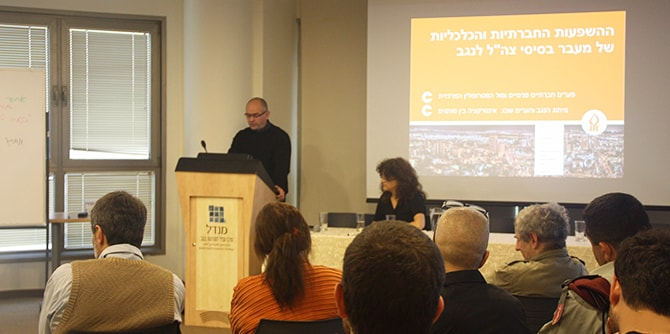

המושב הראשון התמקד בהשלכות החברתיות והעירוניות של מעבר צה"ל לנגב, ואותו ניהלה פרופ' נורית אלפסי מהמחלקה לגאוגרפיה ופיתוח סביבתי באוניברסיטת בן גוריון בנגב. המושב השני התמקד במעבר משרתי הקבע לנגב והובל על-ידי ד"ר יצחק (קיקי) אהרונוביץ' ממרכז מנדל למנהיגות בנגב.
ממצאי הכנס שהוצגו מלמדים על תמונת מצב מורכבת. בצד השגשוג אשר מביא מהלך זה לנגב בתחומים שונים ובמקומות מסוימים, ניכרים עדיין פערים מתגברים בין המרכז ויישוביו לבין הפריפריה ויישוביה. האחרונים נתפסים כחלשים, על-פי הדימויים הישנים שלהם זכתה הפריפריה. אפשר לציין כי העיר באר שבע נתפסת כמרוויחה הגדולה מהמעבר, גם בזכות הנתונים הריאליים וההשקעות המתקיימות בה, וגם בזכות תפיסה שונה ודימוי משתפר של העיר בקרב תושביה, תושבי האזור ותושבי המרכז שעתידים להגר אליה. בצד זו קיימת הכרה כי תהליך זה לבדו לא יהיה בבחינת "משנה משחק", והדרך לפיתוח הנגב עוברת במינוף המהלך בעזרת גופים שונים נוספים – רשויות ממשלתיות וארגונים אזרחיים ופרטיים – ובמיוחד של תושבי הנגב עצמם.
בכנס השתתפו כשישים אנשים והוא יצר מפגש חשוב ופורה בין בעלי תפקידים מהשירות הציבורי, אנשי אקדמיה, פעילים חברתיים והציבור הרחב, וכן עמיתי תוכנית מנדל למנהיגות מקומית בירוחם וברמת הנגב. הצגת הדברים, המפגש והדיון שהתקיים היוו מעטפת נכונה וחשובה לכנס ולדברים שעלו בו וממנו. הכנס היה פתיחה מצוינת ללימודי יחידת "מציאות, חברה ומקום" של תוכנית ירוחם ורמת הנגב.

{kind=link}